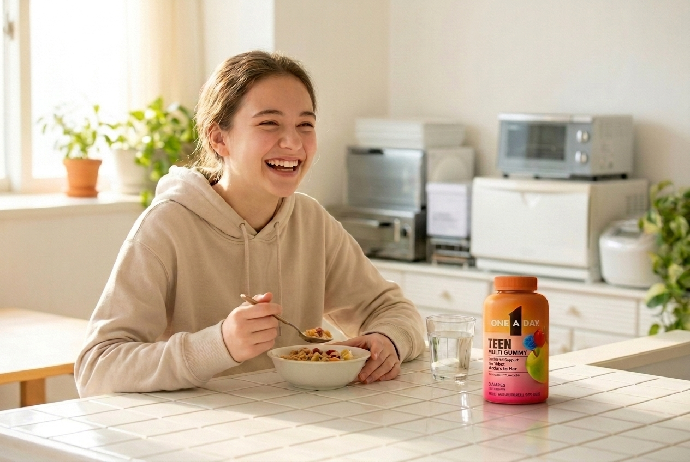
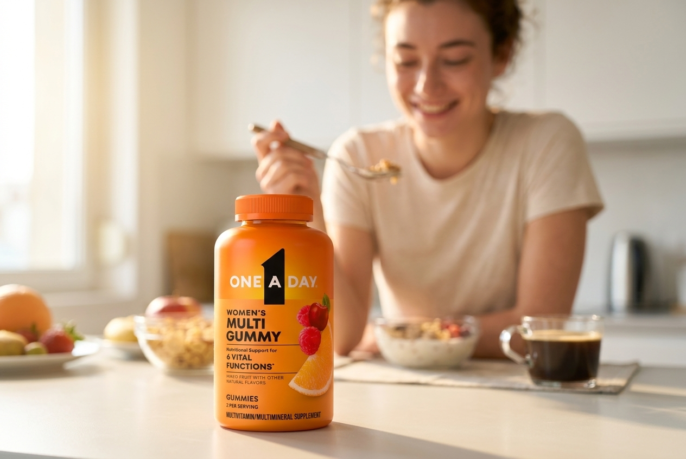
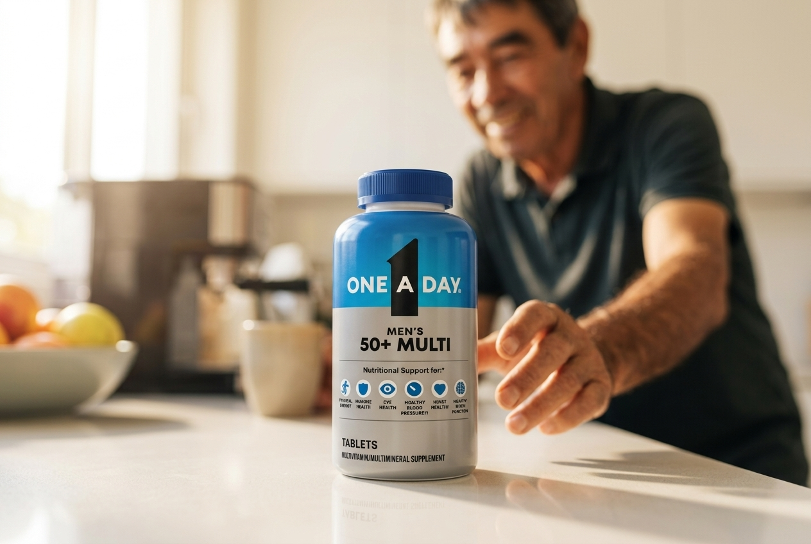

I don't just use AI — I build with it. The work below is branded lifestyle imagery: pack shots, colour systems, typography rules, and channel specs fed in as structured brand data, then generated through Gemini inside a node-based tool I built in React. Designers wire the pipeline — reference in, brand-rules check, generate, channel-fit, compliance, output — and get channel-ready lifestyle frames in minutes, not days. Last year I gave a talk, "AI for Designers," teaching the practice to my team.
AI is just the newest material on my bench. The same instinct that pulled me from graphite to oil to clay to 3D pulls me here: a new medium shows up and I have to make something with it — and, increasingly, build the tool that makes it.

The same pipeline, at trade-show scale — lifestyle panels and close-up heroes generated through CreativeLab for One A Day’s NACDS booth. Pack reference, brand colours, and segment briefs in; booth-ready environmental graphics out. Every frame below is Gemini output from structured brand data, not photography.





Product visualization — where I make the early calls on colour, form, and texture, fast. The tool accelerates the judgment; the judgment stays mine.


Storyboarding — written narratives turned into vivid frames for stories and mood boards.


Science visuals — micro-cellular and abstract imagery from a decade making sense of healthcare science. Using the tools to see, not just to generate.